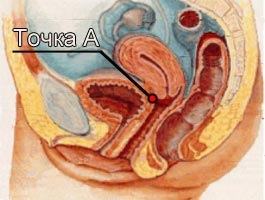
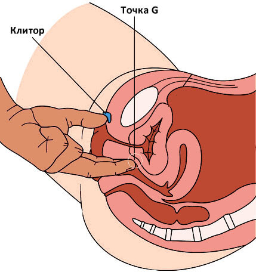

Здравствуйте, дорогие мои!
Сегодня, я решила поднять весьма деликатную и, в то же время, важную тему - размер мужского полового члена. Каждый день я получаю множество вопросов не только от мужчин, но и от женщин, которых очень беспокоят вопросы: какого размера нужен член для множественных оргазмов? 15 сантиметров это норма? Нужно ли увеличивать член? Что делать если не повезло с размером?
Готовясь к теме данной программы, я проконсультировалась со многими врачами: сексопатологами, хирургами, гинекологами, урологами, я изучила статистику размеров мужских половых органов, пообщалась с десятками женщин. Я бы, конечно, могла отмахнуться от этой щекотливой темы, ответив, что все это глупости, а главное - любовь и чтобы человек был хороший, но все мы прекрасно понимаем, что размер действительно имеет значение!
Для того чтобы женщина получала качественные и яркие оргазмы, необходима стимуляция точки G и точки A в её влагалище. Точка G находится на верней стенке влагалища, поэтому для её качественной стимуляции половой член мужчины должен иметь хорошую толщину. Главная точка - точка А находится в глубине влагалища, для её стимуляции половой член должен быть достаточно длинным. Как ни печально, но маленький член достать до точки А просто не в состоянии. А значит, девушка будет лишена радости испытать сильные и яркие множественные оргазмы...
 
Теперь перейдем собственно к размерам. Какой размер считать нормой? Хотя понятие норма тут не совсем корректно, мы будем говорить о среднем размере полового члена.
16-18 сантиметров - это средний размер мужского полового члена в возбужденном состоянии. Многие мужчины сейчас, наверное, облегченно вздохнули, узнав, что у них не "маленький" и все в порядке. Но, как известно, девушкам хотелось бы чуть большего...
18-20 сантиметров - это крупный половой член, который уже может стать для своего обладателя предметом гордости. У девушек, муж или молодой человек которых обладает таким достоинством, не бывает проблем с оргазмами.
20 сантиметров и более - это большой половой член. Такие размеры, несмотря на хвастовство мужчин, встречаются крайне редко. Ими обладают менее 1% мужчин. Но именно такие мужчины становятся героями-любовниками, теми, о ком девушки шепчутся и сплетничают!
14-16 сантиметров - это удовлетворительный размер мужского полового члена. Несмотря на название, как раз УДОВЛЕТВОРИТЬ женщин таким размером бывает не просто. Тем не менее, с медицинской точки зрения, такой размер полностью нормален.
12-14 сантиметров - это маленький половой член. К сожалению, с таким размером доставить женщине полноценное наслаждение практически невозможно. В этом случае мужчине стоит задуматься о том, как увеличить размер своего полового члена.
12 сантиметров и менее. Если член в возбужденном состоянии 12 см и менее, то это обозначается термином "микропенис". Именно над несчастными обладателями такого достоинства девушки и женщины насмехаются и слагают анекдоты. В этом случае мужчине нельзя надеяться на чудо, нужно срочно решать проблему. К счастью, в современном мире эта проблема вполне решаема.
Как же быть тем мужчинам, которым не повезло? Разумеется, не стоит отчаиваться, нужно просто решать свою проблему, а не стараться закрыть на нее глаза. Методов спасения счастливой половой жизни у мужчин в данном случае всего два, во-первых это:
Хирургический метод увеличения полового члена. Не стоит сразу пугаться, данную услугу сейчас оказывают большинство современных медицинских центров. Но у метода есть ряд минусов, т.к. хирургическое вмешательство всегда несет риск, в редких случаях, операция может закончиться повреждением полового члена и импотенцией. Операция проводится под общим наркозом, после операции в течение 2-3 месяцев наблюдаются сильные боли;
"Домашний" метод заключатся в применении специальных кремов и мазей. Сексопатологи и урологи, с которыми я пообщалась, заявили, что на сегодняшний день самое эффективное из существующих средств это
Титан Гель. Он работает следующим образом: таблетка растворяется в течение 1-2 мин, употребить за 20 минут до полового акт. После этого возникает необыкновенно сильная и мощная эрекция. После первого применения пациент ощущает, что его член буквально распух. После применения шипучих таблеток половой член моментально увеличивается на величину
от 3 до 7 сантиметров! При регулярном использовании шипучих таблеток (не менее 1 месяца) результат увеличения постепенно сохраняется. То есть, после курса использования
Титан Гель, половой член сохраняет новый размер.
Также я с удивлением узнала, что научный институт НМУ Урологии недавно проводил испытание Титан Гель, причем это было масштабное исследование, в котором приняли участие более ста мужчин-добровольцев. Все они страдали из-за "микропениса" или были не удовлетворены размерами своего полового органа. Если даже учёные озаботились решением данной проблемы, значит дело действительно важное. По результатам исследования, которое длилось 2 месяца, Титан Гель показал следующие результаты:
1. Увеличение размера члена: размер возбужденного члена увеличился на величину от 3 до 7 сантиметров. Причем речь идет о длительном эффекте, спустя месяц после окончания использования.
2. Продление полового акта: время полового акта значительно увеличивается. Это важно, так как если мужчина "кончает" очень быстро, то женщина не успевает получить полноценное удовольствие.
3. Усиление эрекции: возбуждение наступает очень быстро, железная эрекция сохраняется на протяжении всего полового акта.
4. Увеличение толщины члена: благодаря полной и сильной эрекции происходит заметное увеличение толщины полового члена, что сказывается на удовлетворенности партнерши в результате стимуляции точки G.
5. Качество спермы: заметно увеличивается качество и количество спермы, которая выбрасывается при оргазме.
6. Яркий оргазм: значительно усиливается оргазм у мужчины, благодаря повышению чувствительности полового члена и усилению либидо.
Гарантия доктора Богомоловой
Внимание!
Участились случаи продажи подделок Титан Гель, который не имеет лечебных свойств! Поэтому мы специально для наших читателей размещаем кнопку заказа средства Титан Гель от единственного официального поставщика Делая заказ здесь, вы гарантированно получите качественный продукт по лучшей цене!
Купить Титан Гель можно пройдя тест и заполнив форму для участия в акции или на
официальном сайте.
В аптеках он не продается и продаваться не будет, поэтому остерегайтесь подделок. Для моих читателей я добилась от производителя специальной скидки, поэтому, если данная проблема присутствует в вашей жизни, то решайте её прямо сейчас. Подарите себе и своей партнерше радость и счастье от полноценной половой жизни!